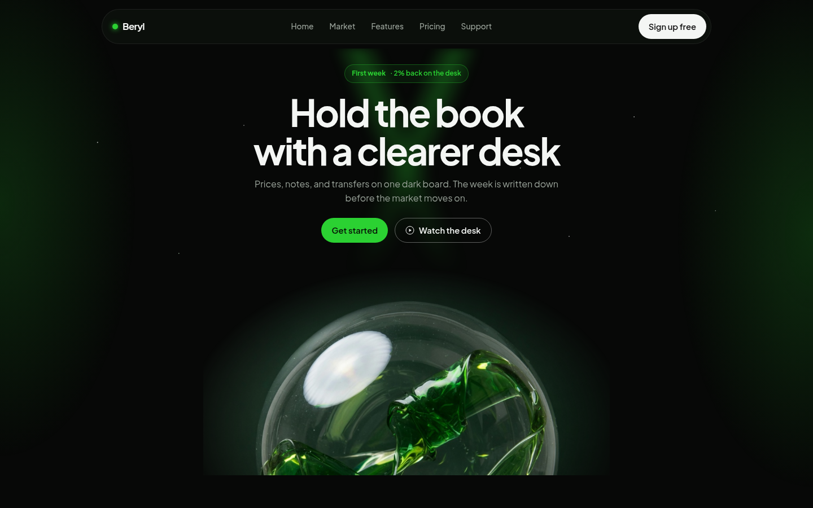
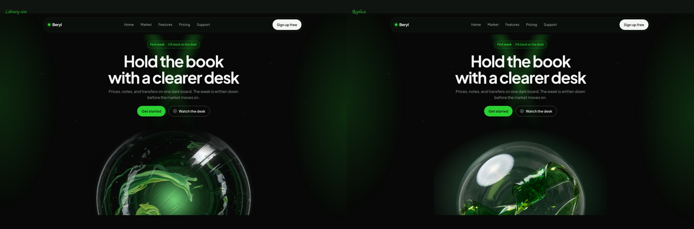
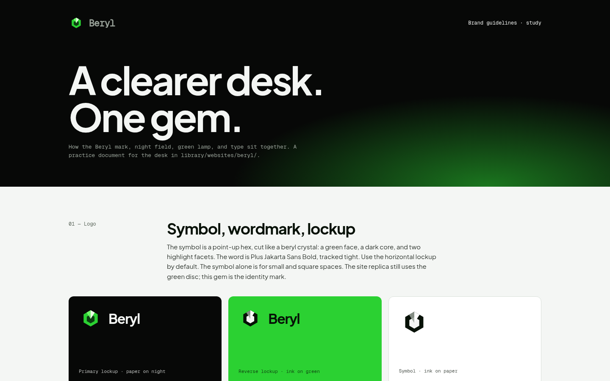
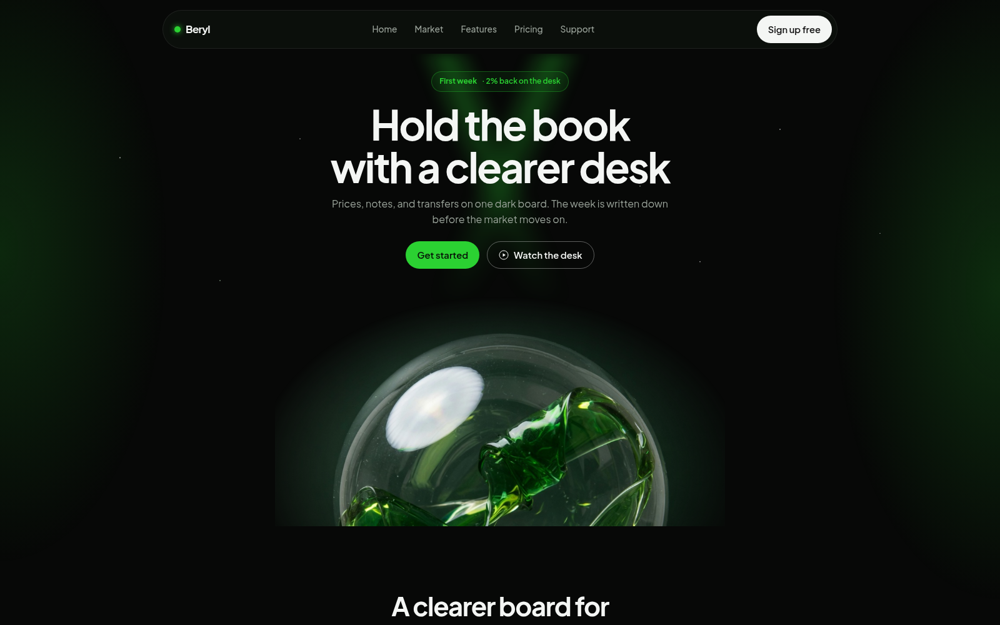
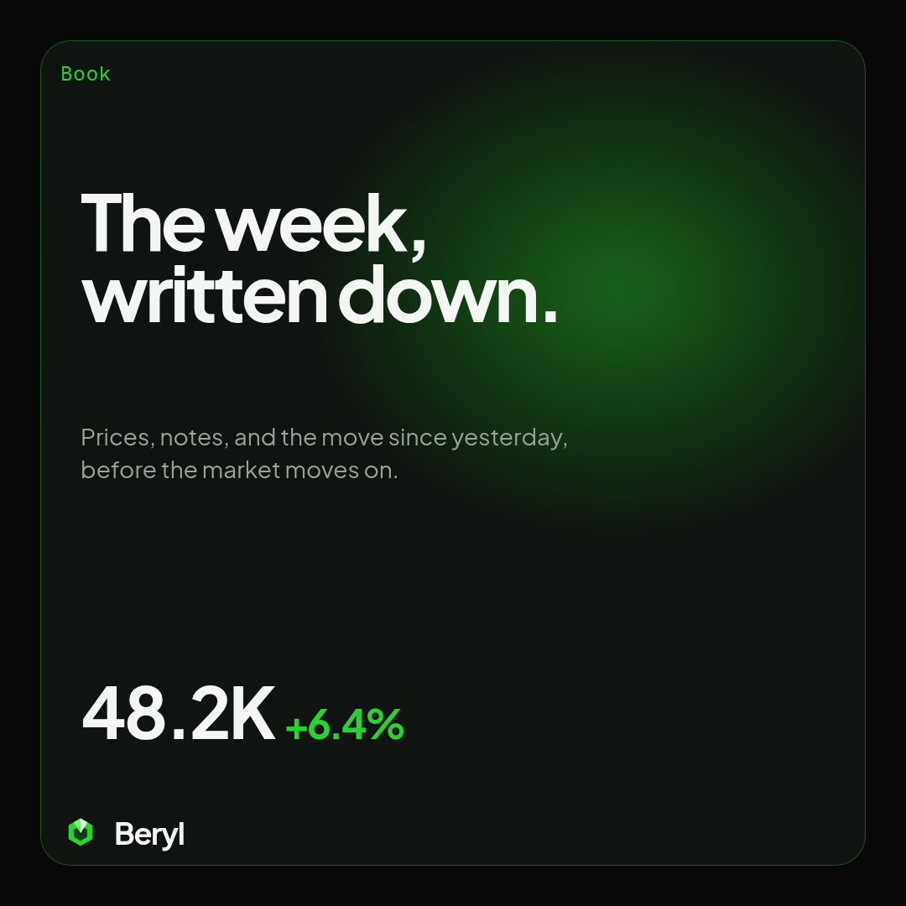
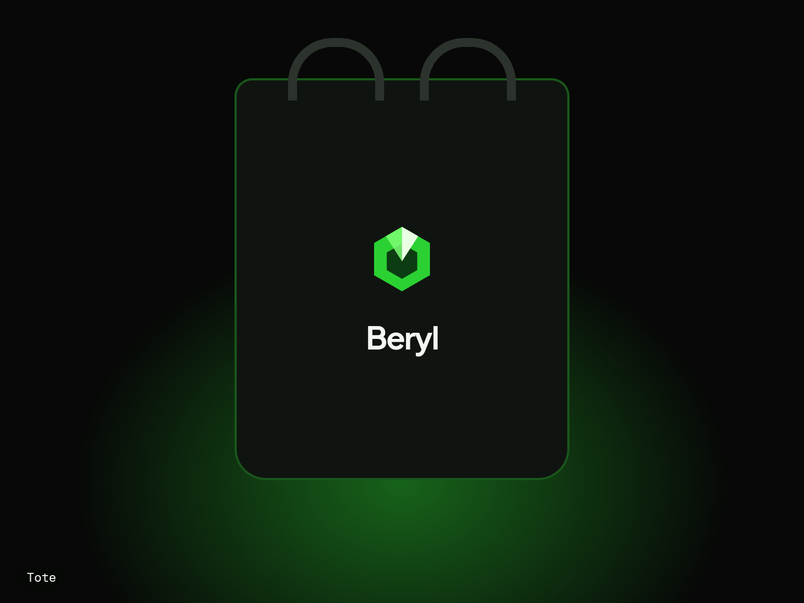
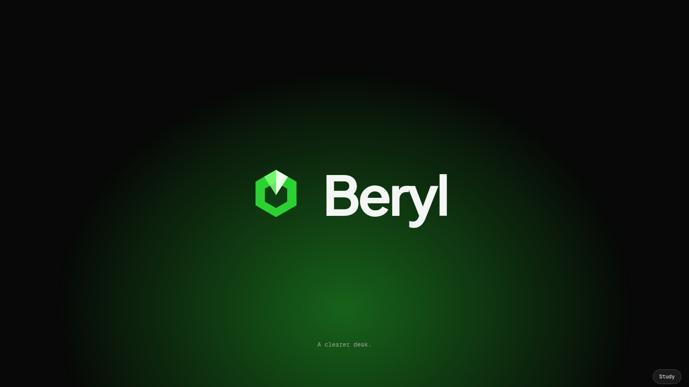

Beryl
Beryl
Beryl identity:
study & extensions
A practice study of the Beryl desk already in this library (library/websites/beryl/). The replica keeps that page. The extended system redraws the mark as a faceted gem and applies it to guidelines, a motion landing, social, merch, and a logo reveal. For practice only.
A — Replica

Site replicaNight-green desk · prices, notes, plans

Library site vs replicaside-by-side compare.pngB — Extended system

Brand guidelinesclearspace · min size · tokens + WCAG · type · do/don't
Website landingGSAP ScrollTrigger · reduced-motion · responsive
Social kit3 posts 1080² · story 1080×1920
Merch & stationeryletterhead · email signature · tote · tees · ID badge
Logo revealGSAP timeline · webm in exports/